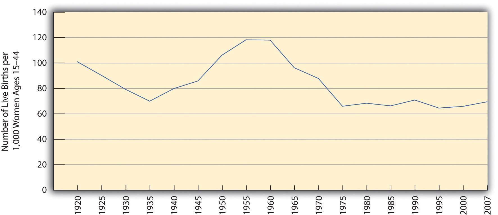
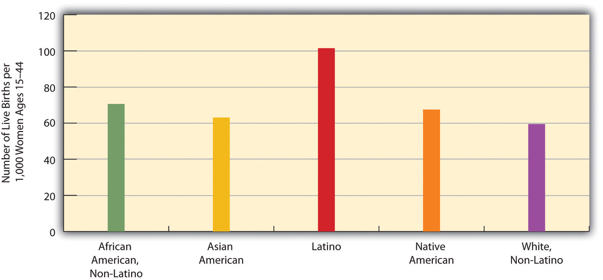
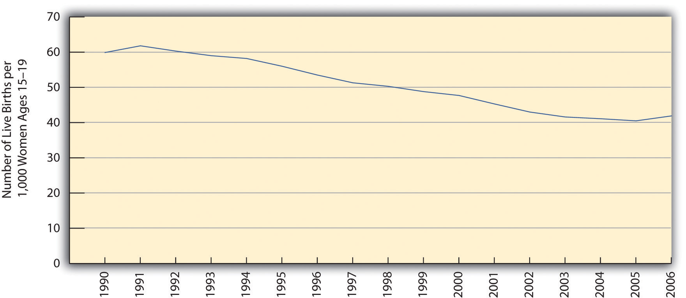
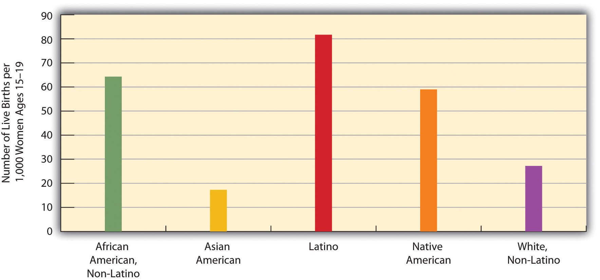
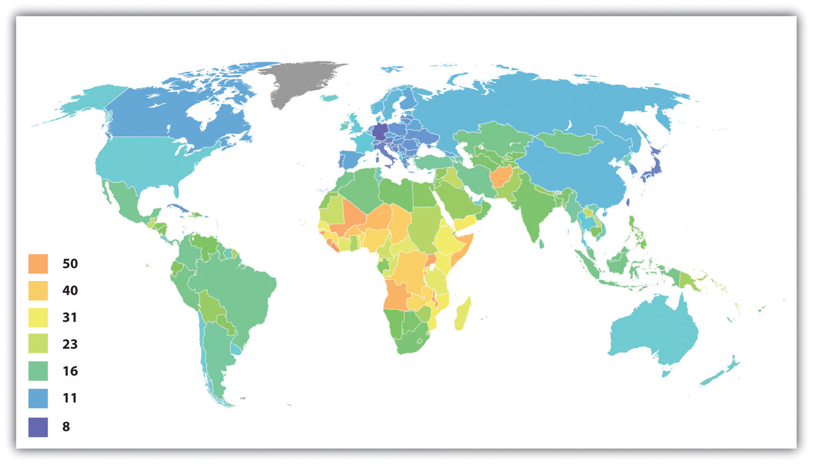

We have commented that population change is an important source of other changes in society. The study of population is so significant that it occupies a special subfield within sociology called demographyThe study of population growth and changes in population composition.. To be more precise, demography is the study of changes in the size and composition of population. It encompasses several concepts: fertility and birth rates, mortality and death rates, and migration (Weeks, 2012).Weeks, J. R. (2012). Population: An introduction to concepts and issues (11th ed.). Belmont, CA: Wadsworth. Let’s look at each of these briefly.
FertilityThe number of live births. refers to the number of live births. Demographers use several measures of fertility. One measure is the crude birth rateThe number of live births for every 1,000 people in a population in a given year., or the number of live births for every 1,000 people in a population in a given year. To determine the crude birth rate, the number of live births in a year is divided by the population size, and this result is then multiplied by 1,000. For example, in 2009 the United States had a population of about 307 million and roughly 4,136,000 births. Dividing the latter figure by the former figure gives us 0.0135 rounded off. We then multiply this quotient by 1,000 to yield a crude birth rate of 13.5 births per 1,000 population (U.S. Census Bureau, 2010).U.S. Census Bureau. (2010). Statistical abstract of the United States: 2010. Washington, DC: U.S. Government Printing Office. Retrieved from http://www.census.gov/compendia/statab We call this a “crude” birth rate because the denominator, population size, consists of the total population, not just the number of women or even the number of women of childbearing age (commonly considered 15–44 years).
A second measure is the general fertility rateThe number of live births per 1,000 women aged 15–44 years. (also just called the fertility rate or birth rate), or the number of live births per 1,000 women aged 15–44 (i.e., of childbearing age). This is calculated in a manner similar to that for the crude fertility rate, but in this case the number of births is divided by the number of women aged 15–44 before multiplying by 1,000. The U.S. general fertility rate for 2009 was about 65.5 (i.e., 65.5 births per 1,000 women aged 15–44; Tejada-Vera & Sutton, 2010).Tejada-Vera, B., & Sutton, P. D. (2010). Births, marriages, divorces, and deaths: Provisional data for 2009. National vital statistics reports, 58(25), 1–6.
A third measure is the total fertility rateThe number of children an average woman is expected to have in her lifetime, sometimes expressed as the number of children an average 1,000 women are expected to have in their lifetimes., or the number of children an average woman is expected to have in her lifetime. This measure often appears in the news media and is more easily understood by the public than either of the first two measures. In 2008, the U.S. total fertility rate was about 2.09. Sometimes the total fertility rate is expressed as the average number of births that an average group of 1,000 women would be expected to have. In this case, the average number of children that one woman is expected to have is simply multiplied by 1,000. Using this latter calculation, the U.S. total fertility rate in 2008 was about 2,090 (i.e., an average group of 1,000 women would be expected to have, in their lifetimes, 2,090 children; Hamilton, Martin, & Ventura, 2010).Hamilton, B. E., Martin, J. A., & Ventura, S. J. (2010). Births: Preliminary data for 2008. National vital statistics reports, 58(16), 1–18.
As Figure 19.1 "U.S. General Fertility Rate, 1920–2007" indicates, the U.S. general fertility rate has changed a lot since 1920, dropping from 101 (per 1,000 women aged 15–44) in 1920 to 70 in 1935, during the Great Depression, before rising afterward until 1955. (Note the very sharp increase from 1945 to 1955, as the post–World War II baby boom began.) The fertility rate then fell steadily after 1960 until the 1970s but has remained rather steady since then, fluctuating only slightly between 65 and 70 per 1,000 women aged 15–44.
Figure 19.1 U.S. General Fertility Rate, 1920–2007
Sources: Data from Hamilton, B. E., Martin, J. A., & Ventura, S. J. (2010). Births: Preliminary data for 2008. National vital statistics reports, 58(16), 1–18; Martin, J. A., Hamilton, B. E., Sutton, P. D., Ventura, S. J., Menacker, F., Kirmeyer, S., & Mathews, T. J. (2009). Births: Final data for 2006. National vital statistics reports, 57(7), 1–102; U.S. Census Bureau. (1951). Statistical abstract of the United States: 1951. Washington, DC: U.S. Government Printing Office.
The fertility rate varies by race and ethnicity. As Figure 19.2 "Race, Ethnicity, and U.S. Fertility Rates, 2006" shows, it is lowest for non-Latina white women and the highest for Latina women. Along with immigration, the high fertility rate of Latina women has fueled the large growth of the Latino population. Latinos now account for about 16% of the U.S. population, and their proportion is expected to reach more than 30% by 2050 (U.S. Census Bureau, 2010).U.S. Census Bureau. (2010). Statistical abstract of the United States: 2010. Washington, DC: U.S. Government Printing Office. Retrieved from http://www.census.gov/compendia/statab
Figure 19.2 Race, Ethnicity, and U.S. Fertility Rates, 2006
Source: Data from U.S. Census Bureau. (2010). Statistical abstract of the United States: 2010. Washington, DC: U.S. Government Printing Office. Retrieved from http://www.census.gov/compendia/statab.
The fertility rate of teenagers is a special concern because of their age. Although it is still a rate that most people wish were lower, it dropped steadily through the 1990s, before leveling off after 2002 and rising slightly afterward (see Figure 19.3 "U.S. Teenage Fertility Rate, 1990–2006"). Although most experts attribute this drop to public education campaigns and increased contraception, the United States still has the highest rate of teenage pregnancy and fertility of any industrial nation (Eckholm, 2009).Eckholm, E. (2009, March 18). ’07 U.S. births break baby boom record. The New York Times, p. A14. Teenage fertility again varies by race and ethnicity, with Latina teenagers having the highest fertility rates and Asian American teenagers the lowest (see Figure 19.4 "Race, Ethnicity, and U.S. Teenage Fertility Rates, 2007").
Figure 19.3 U.S. Teenage Fertility Rate, 1990–2006
Source: Data from Martin, J. A., Hamilton, B. E., Sutton, P. D., Ventura, S. J., Menacker, F., Kirmeyer, S., & Mathews, T. J. (2009). Births: Final data for 2006. National vital statistics reports, 57(7), 1–102.
Figure 19.4 Race, Ethnicity, and U.S. Teenage Fertility Rates, 2007
Source: Data from U.S. Census Bureau. (2010). Statistical abstract of the United States: 2010. Washington, DC: U.S. Government Printing Office. Retrieved from http://www.census.gov/compendia/statab.
Fertility rates also differ around the world and are especially high in poor nations (see Figure 19.5 "Crude Birth Rates Around the World, 2008 (Number of Births per 1,000 Population)"). Demographers identify several reasons for these high rates (Weeks, 2012).Weeks, J. R. (2012). Population: An introduction to concepts and issues (11th ed.). Belmont, CA: Wadsworth.
Figure 19.5 Crude Birth Rates Around the World, 2008 (Number of Births per 1,000 Population)
Source: Adapted from http://en.wikipedia.org/wiki/File:Birth_rate_figures_for_countries.PNG.
Poor nations have higher birth rates for several reasons. One reason is the agricultural economies typical of these nations. In these economies, children are an important economic resource, and families will ordinarily try to have as many children as possible.
Source: Photo courtesy of R. Kalden, Voice of America, http://commons.wikimedia.org/wiki/File:Children_near_ renovation_of_Jawaharlal_Nehru_Stadium_in_New_ Delhi_2010-02-24.JPG.
First, poor nations are usually agricultural ones. In agricultural societies, children are an important economic resource, as a family will be more productive if it has more children. This means that families will ordinarily try to have as many children as possible. Second, infant and child mortality rates are high in these nations. Because parents realize that one or more of their children may die before adulthood, they have more children to “make up” for the anticipated deaths. A third reason is that many parents in low-income nations prefer sons to daughters, and, if a daughter is born, they “try again” for a son. Fourth, traditional gender roles are often very strong in poor nations, and these roles include the belief that women should be wives and mothers above all. With this ideology in place, it is not surprising that women will have several children. Finally, contraception is uncommon in poor nations. Without contraception, many more pregnancies and births certainly occur. For all of these reasons, then, fertility is much higher in poor nations than in rich nations.
MortalityThe number of deaths. is the flip side of fertility and refers to the number of deaths. Demographers measure it with the crude death rateThe number of deaths for every 1,000 people in a population in a given year., the number of deaths for every 1,000 people in a population in a given year. To determine the crude death rate, the number of deaths is divided by the population size, and this result is then multiplied by 1,000. In 2006 the United States had slightly more than 2.4 million deaths for a crude death rate of 8.1 deaths for every 1,000 persons. We call this a “crude” death rate because the denominator, population size, consists of the total population and does not take its age distribution into account. All things equal, a society with a higher proportion of older people should have a higher crude death rate. Demographers often calculate age-adjusted death rates that adjust for a population’s age distribution.
Another demographic concept is migrationThe movement of people into or out of specific regions., the movement of people into and out of specific regions. Since the dawn of human history, people have migrated in search of a better life, and many have been forced to migrate by ethnic conflict or the slave trade.
Several classifications of migration exist. When people move into a region, we call it in-migration, or immigration; when they move out of a region, we call it out-migration, or emigration. The in-migration rate is the number of people moving into a region for every 1,000 people in the region, while the out-migration rate is the number of people moving from the region for every 1,000 people. The difference between the two is the net migration rate (in-migration minus out-migration). Recalling the news story about Michigan that began this chapter, Michigan has had a net migration of less than zero, as its out-migration has been greater than its in-migration.
Migration can also be either domestic or international in scope. Domestic migration happens within a country’s national borders, as when retired people from the northeastern United States move to Florida or the Southwest. International migration happens across national borders. When international immigration is heavy, as it has been into the United States and Western Europe in the last few decades, the effect on population growth and other aspects of national life can be significant. Domestic migration can also have a large impact. The great migration of African Americans from the South into northern cities during the first half of the 20th century changed many aspects of those cities’ lives (Berlin, 2010).Berlin, I. (2010). The making of African America: The four great migrations. New York, NY: Viking. Meanwhile, the movement during the past few decades of northerners into the South and Southwest also had quite an impact: the housing market initially exploded, for example, and traffic increased.